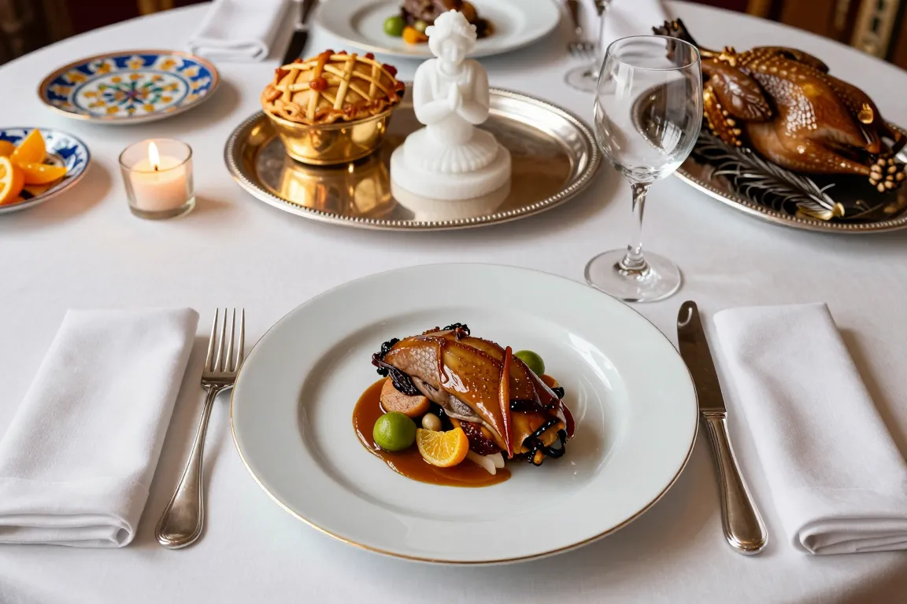

Festen ved det italienske hoffet slik Bartolomeo Scappi la den fram i 1570. Et kjøkken med mange kokker sender ut mange retter samtidig: paier, steker, kandisert frukt og skulptur i sukker. Kokken bruker gaffelen, sukkeret og spydet med stor ferdighet.

Kjerneidé
Vis vertens makt med antallet, ferdigheten og skjønnheten i rettene, og la sukker og bakverk ta form av bygninger og dyr.
Designprinsipper
Sett tre eller fire serveringer med inntil 30 retter hver, og sett dem i et mønster på bordet.
Bruk sukker i den salte retten og i skulpturen: marsipan, konfekt og kandisert skall.
Bak vilt og kjøtt i et bakverksskall, og dekorer skallet med et mønster av deig.
Stek på spyd med en saus av sitrussaft, og kle en stekt fugl i sine egne fjær.
Skjær opp steken ved bordet; en forskjærer opplært i kunsten skjærer hver fugl.
Legg en gaffel, en kniv og en skje ved hver gjests plass, og en ren serviett.
Hold et rent og ordnet kjøkken: Scappi tegner hvert verktøy og hver stasjon.